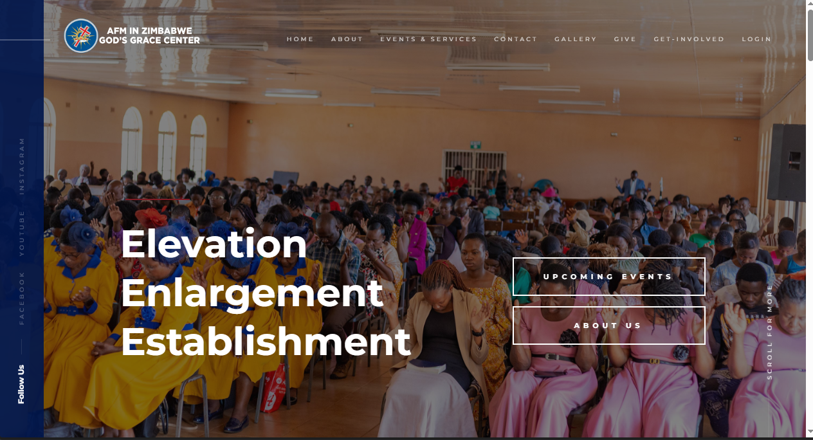
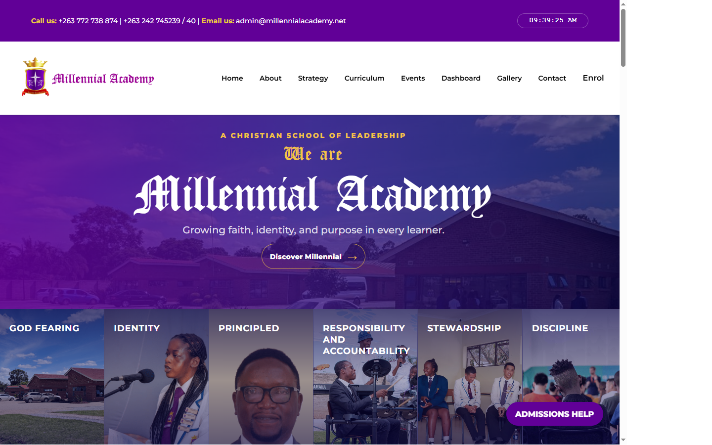
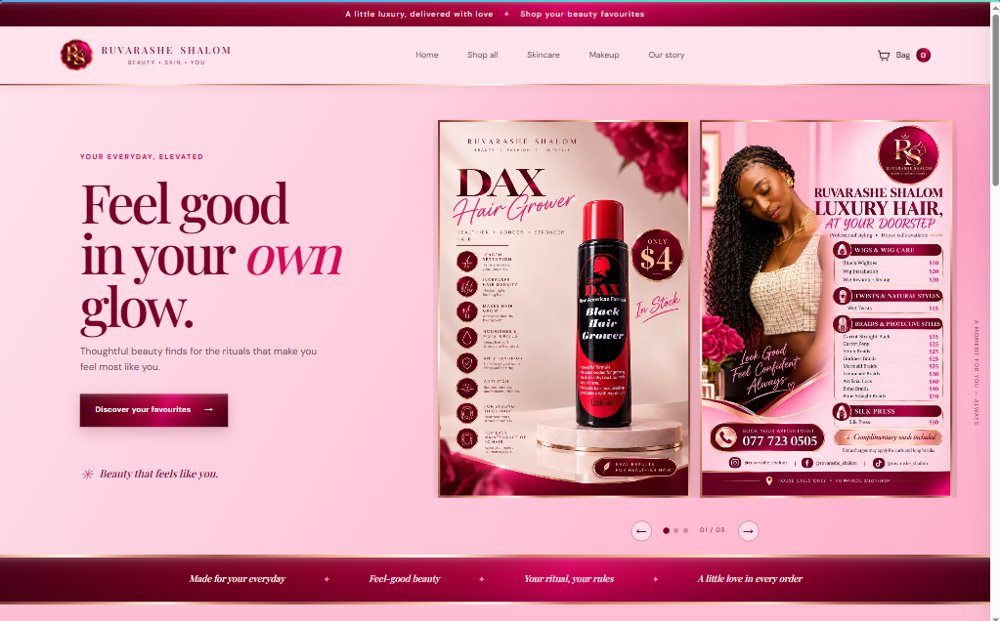
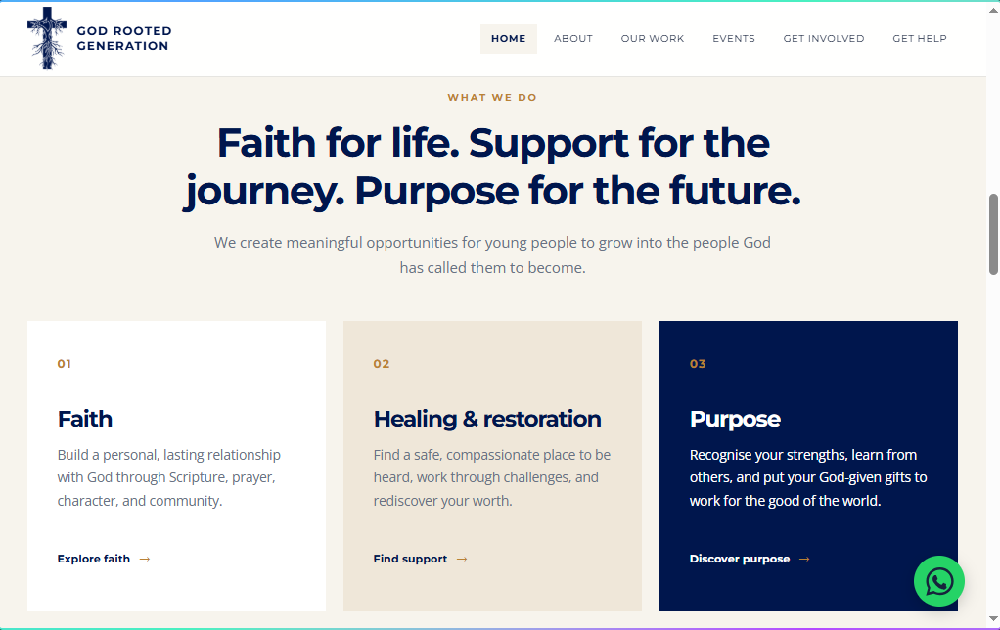
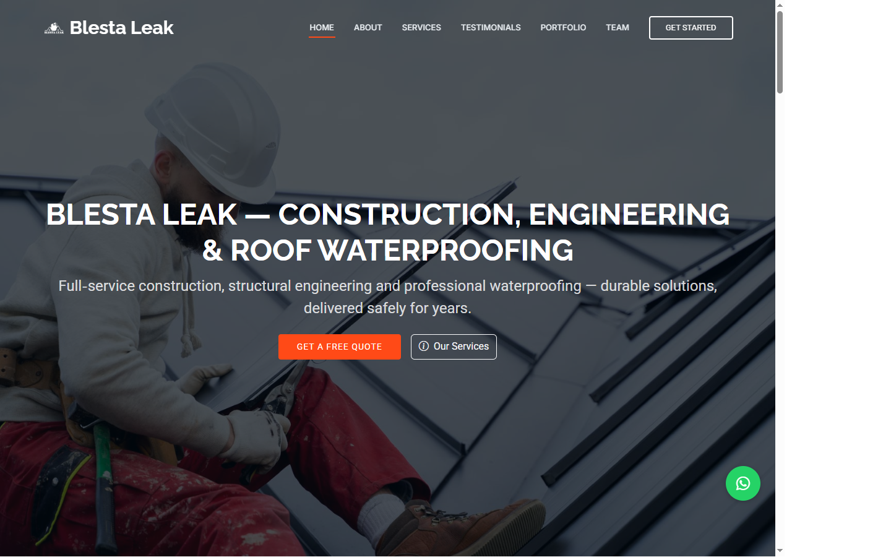
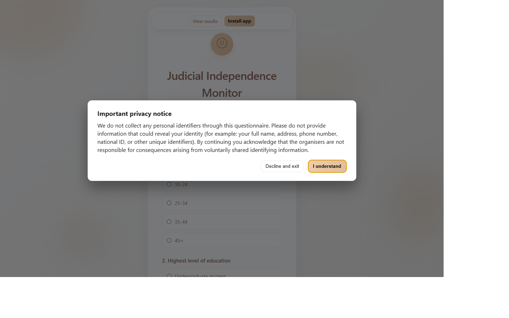

Web Development
Clear, responsive websites for businesses, churches, organisations and individuals.
- Business and portfolio websites
- Landing pages and redesigns
- Maintenance and improvements
SOFTWARE DEVELOPER · GRAPHIC DESIGNER
Turning ideas into practical digital solutions through technology and creativity.
Harare, Zimbabwe · Contact info
TAWONGA NHENDE · DIGITAL SOLUTIONS
Technology and creativity working together to bring your ideas to life. From websites and digital solutions to logos and graphic design, I help businesses and individuals establish and grow their digital presence.
Technology. Creativity. Solutions.
Through Tawonga Digital Solutions, I provide practical digital and creative services, combining technical development with thoughtful design.
WHAT I DO
Clear, responsive websites for businesses, churches, organisations and individuals.
Practical digital systems that support useful workflows and meaningful functionality.
Thoughtful visual communication for brands, events and digital channels.
WHY GO LIVE?
A well-built website or system is more than an online address. It gives your work a reliable place to be found, understood and experienced.
Help customers, members and partners discover what you offer wherever they are.
Present your organisation clearly and professionally with information people can trust.
Give people access to your services, updates, contacts and resources around the clock.
Use logins, dashboards, calendars, blogs and tailored tools to simplify everyday work.
SELECTED WORK
These are more than websites. They are requirement-driven digital systems and experiences, shaped around each organisation's needs with features such as dashboards, staff logins, calendars, blogs and other tailored functionality where required.

A church website designed to communicate the church's identity, share information about services and events, and help visitors connect with the church community.
Visit Website ↗
A school website presenting the academy's educational approach, curriculum, events and school community, with features that support communication and engagement.
Visit Website ↗
An elegant beauty e-commerce storefront designed to showcase products, organise shopping categories and provide a simple shopping experience.
Visit Website ↗
A youth-focused community website presenting opportunities for faith, healing, restoration and purpose, with content and engagement features shaped around its mission.
Visit Website ↗
A corporate website for a construction, engineering and roof waterproofing company, presenting its services, company information and project portfolio.
Visit Website ↗
An interactive web application designed to collect perspectives on judicial independence in Zimbabwe through a structured questionnaire, with privacy-conscious data collection and results access.
Visit Website ↗A LITTLE ABOUT ME
I'm Tawonga R. Nhende, a Computer Science graduate, software developer and graphic designer. I enjoy combining technology and creativity to develop practical solutions, build digital experiences and communicate ideas through design.
View my CV ↗PROFESSIONAL SNAPSHOT
LET'S TALK
Whether you need a website, a digital solution or creative design, let's discuss your project.
Get in Touch